2026

XXIV Encuentro de Superficies y Materiales Nanoestructurados (Nano 2026)
Dinámica de transporte de gas en medios acuosos confinados: modelado y evaluación electroquímica de capas delgadas de ZIF-8

Advanced Training School on Innovative Materials — BIONAM 2026
Unraveling the Physical Chemistry of Responsive Hydrogels
Computational Methods for the Design of Adsorptive and Separation Materials: From Molecular Simulations to Continuum Models
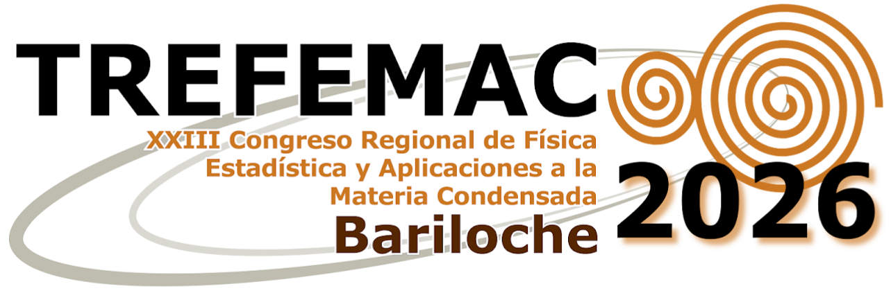
Abstract book ↗XXIII Congreso Regional de Física Estadística y Aplicaciones a la Materia Condensada (TREFEMAC 2026)
Adsorción de proteínas en nanopartículas de sílica: el rol de las interacciones proteína-proteína de corto alcance
2025

XVII Jornadas de Tesistas del INIFTA
Adsorción de péptidos y proteínas en nanopartículas de sílica
Nanogeles termo-responsivos como plataformas para la absorción de doxorrubicina

VIII Encuentro Argentino de Materia Blanda (MAB VIII)
Exploring the role of nanoparticle size in protein adsorption onto silica surfaces
Role of Amino Acid Sequence in the Adsorption of Silica-Binding Peptides
Impact of Network Functionalization on the Surface Properties of Hydrogel Systems

School on Biological Physics and Biomolecular Simulations in the Machine Learning Era
Molecular Theory of protein adsorption on silica surfaces
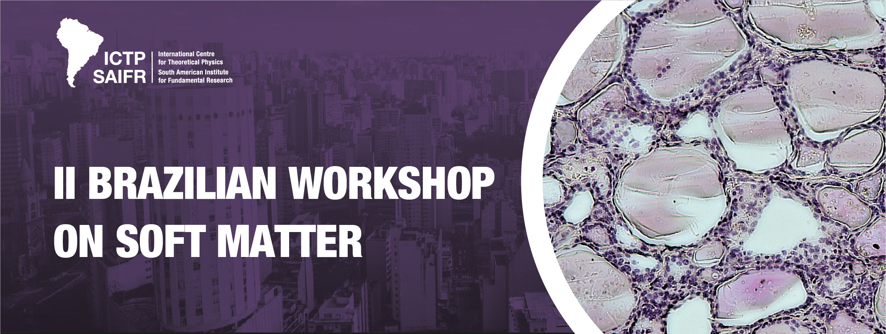
Event website ↗II Brazilian Workshop on Soft Matter
Modelling protein adsorption on silica nanoparticles by means of Molecular Theory
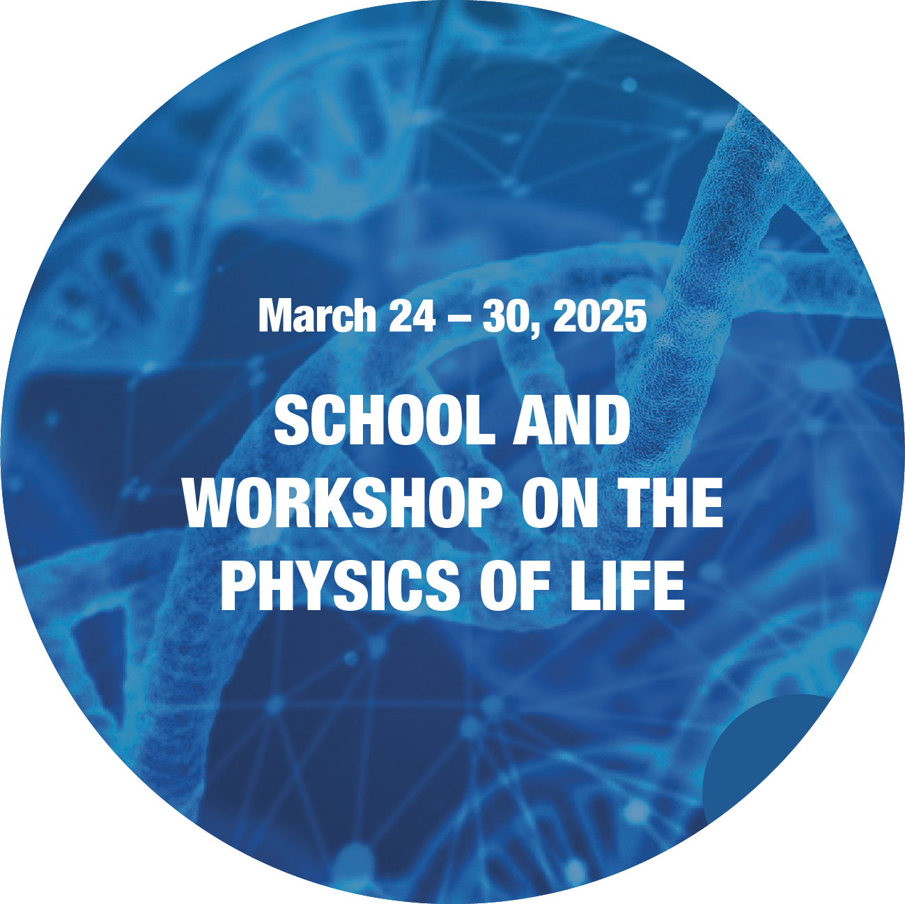
Event website ↗School and Workshop on the Physics of Life
Impact of Network Functionalization on the Surface Properties and Behavior of Thermoresponsive Copolymeric Nanogels
2024
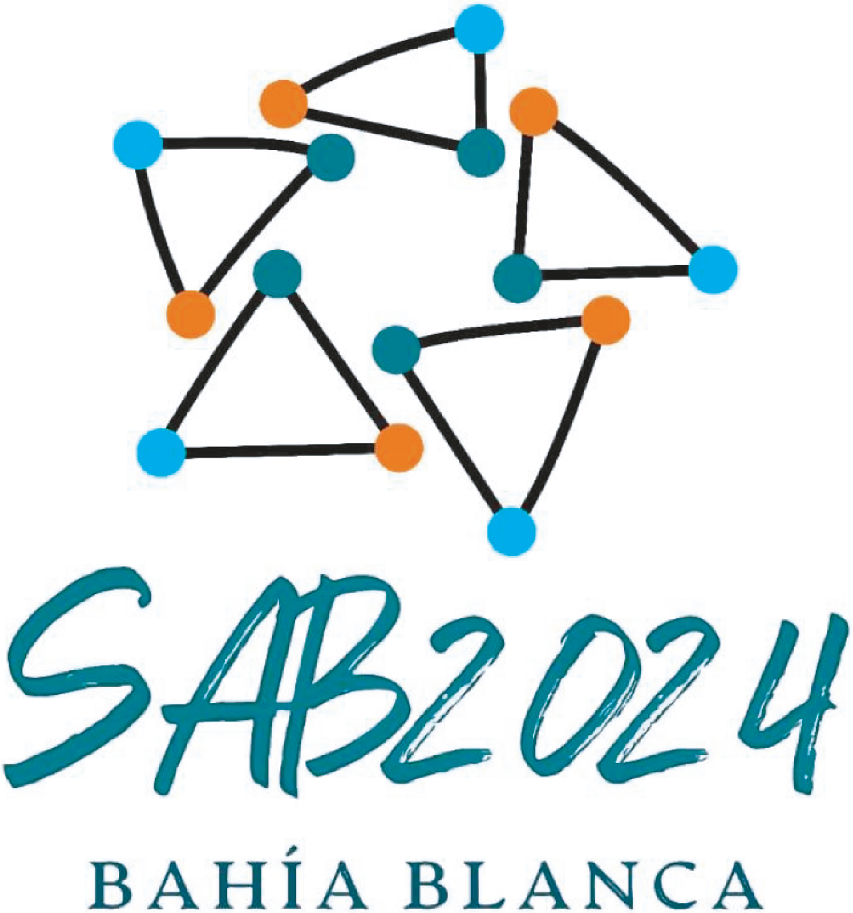
Abstract book ↗LII Reunión Anual de la Sociedad Argentina de Biofísica (SAB 2024)
Theoretical Analysis of Molecular Coatings to Prevent Protein Adsorption on Silica Nanoparticles
The Role of Silica-Binding Peptides in Enhancing GFP Adsorption on Silica-like Surface Models: a Thermodynamic Study
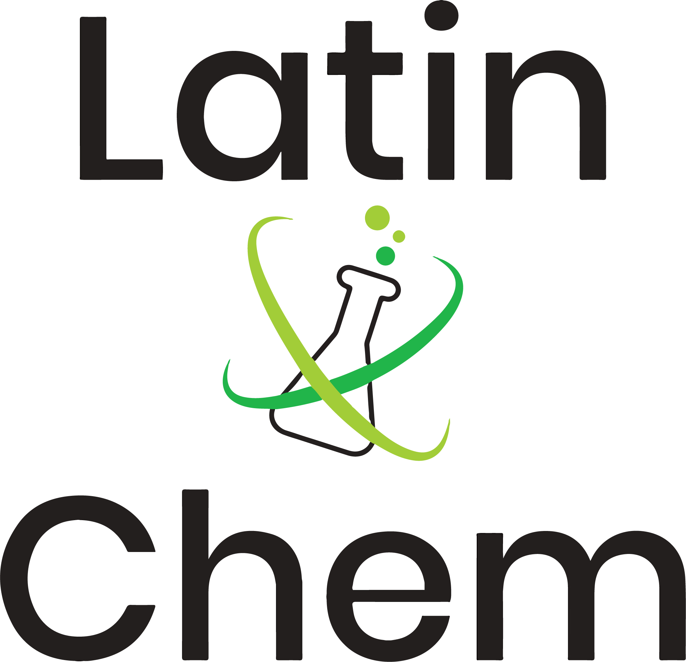
Event website ↗#LatinXChem Conference 2024
Negatively charged protein adsorption on silica surface by Molecular Theory simulations
Protein adsorption mediated by silica binding peptide on silica-like surface model via thermodynamic simulations
Polymer nanogels responsive to changes in solvent quality as biomaterial carriers

XVI Jornadas de Tesistas del INIFTA
Nanogeles de polímeros con respuesta a cambios de la calidad del solvente como vehículos de biomateriales: estudios por simulaciones computacionales
2023
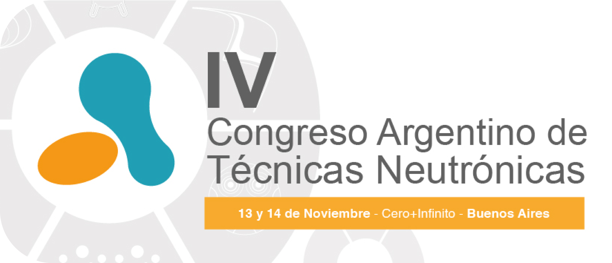
Abstract book ↗IV Congreso Argentino de Técnicas Neutrónicas (TN 2023)
Caracterización de nanopartículas de sílica en medios biológicos mediante espectroscopía de correlación de fotones de rayos X (XPCS)
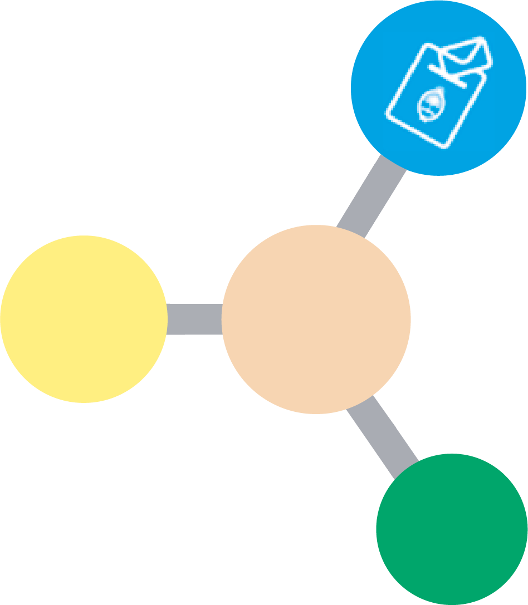
Abstract book ↗V Jornadas de Jóvenes Bionanocientíficxs (JoBioN 2023)
Adsorción de péptidos a superficies de SiO₂
#LatinXChem Twitter Conference 2023
Parametrization of non-specific interactions for protein adsorption on SiO₂ surface
2022
#LatinXChem Twitter Conference 2022
Adsorción competitiva de proteínas en superficies que regulan carga similares a la sílica: el rol del equilibrio de protonación
Adsorción de proteínas sobre estructuras nanoporosas de sílica, un estudio por simulación
Teoría termodinámica para geles multi-respuesta
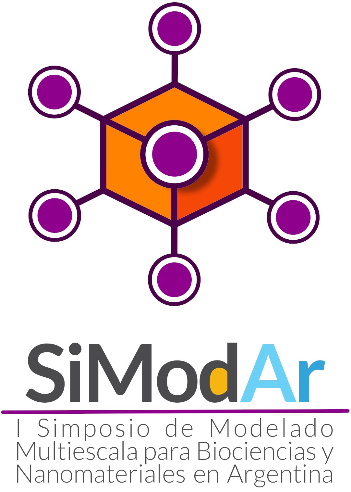
I Simposio de Modelado Multiescala para Biociencias y Nanomateriales en Argentina (I SiModAr)
Adsorción competitiva de proteínas en superficies que regulan carga similares a la sílica: el rol del equilibrio de protonación
★ Mención a Póster Destacado
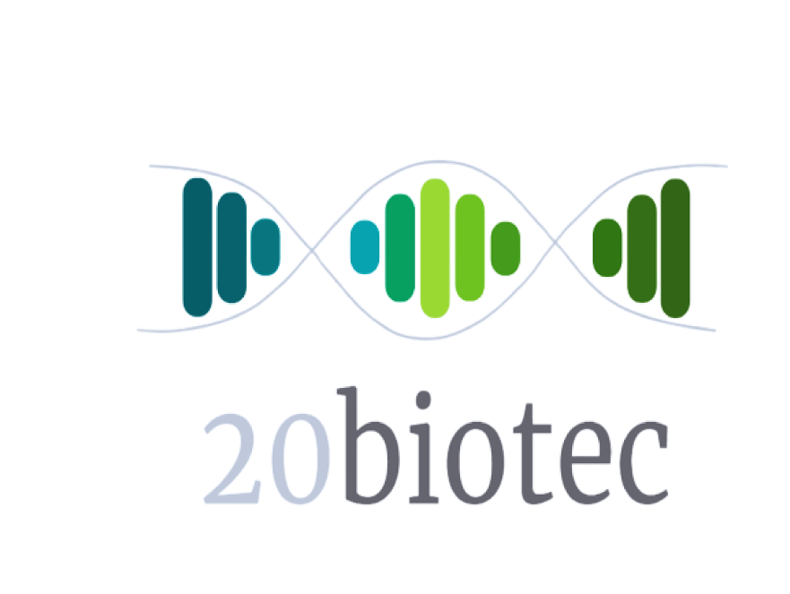
Abstract book ↗1ra Jornada de Divulgación en Biotecnología «20 años de Biotec en la UNLP»
Regulación de carga en proteínas: el rol del equilibrio de protonación
Adsorción de proteínas sobre estructuras nanoporosas de sílica, un estudio por simulación
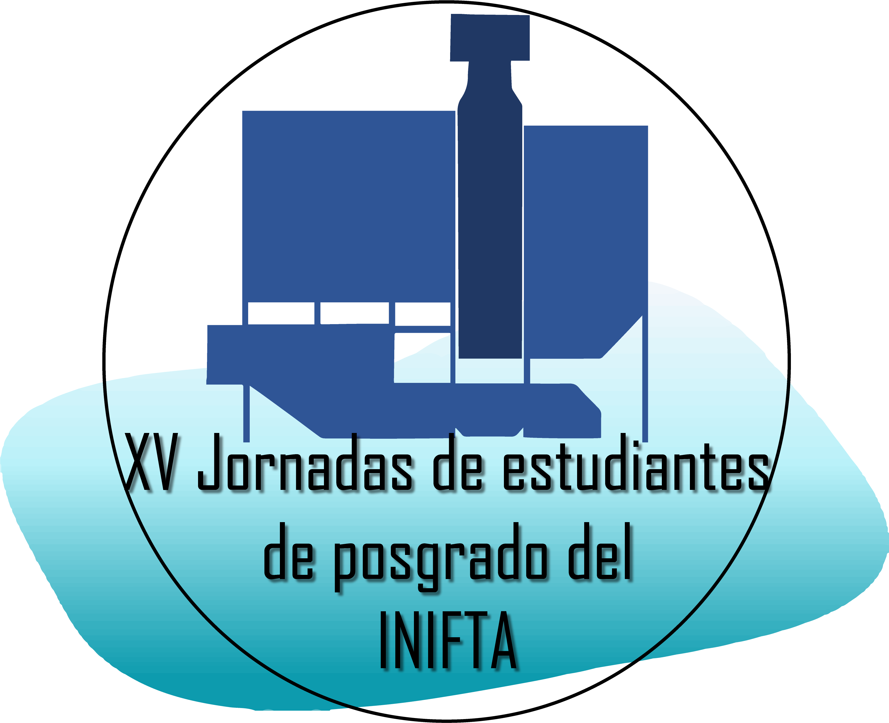
XV Jornadas de Estudiantes de Posgrado del INIFTA
Adsorción de proteínas en superficies que regulan carga similares a la sílica: el papel del equilibrio de protonación
Teoría termodinámica para hidrogeles que responden a múltiples estímulos
2021
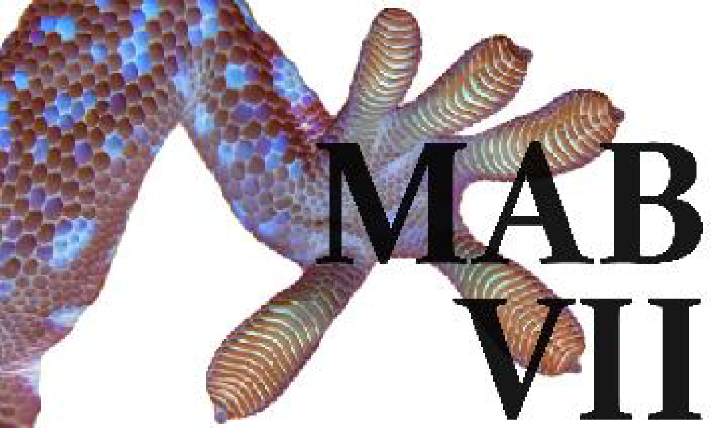
Abstract book ↗VII Encuentro Argentino de Materia Blanda (MAB VII)
Comparación de estrategias antifouling en nanopartículas de sílica
2020
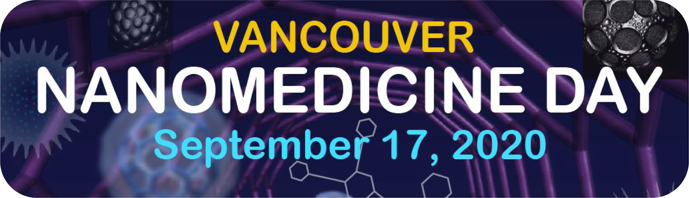
Abstract book ↗Virtual Vancouver Nanomedicine Day (NMD 2020)
Comparing Antifouling Strategies on Silica Nanoparticles
2019
XLVIII Reunión Anual de la Sociedad Argentina de Biofísica (SAB 2019)
Using Polyamine Concentration to Trigger Drug Release from Polymer Hydrogel Films
Triggering Doxorubicin Release from pH-responsive Hydrogels Using the Concentration of Polyamines
2018
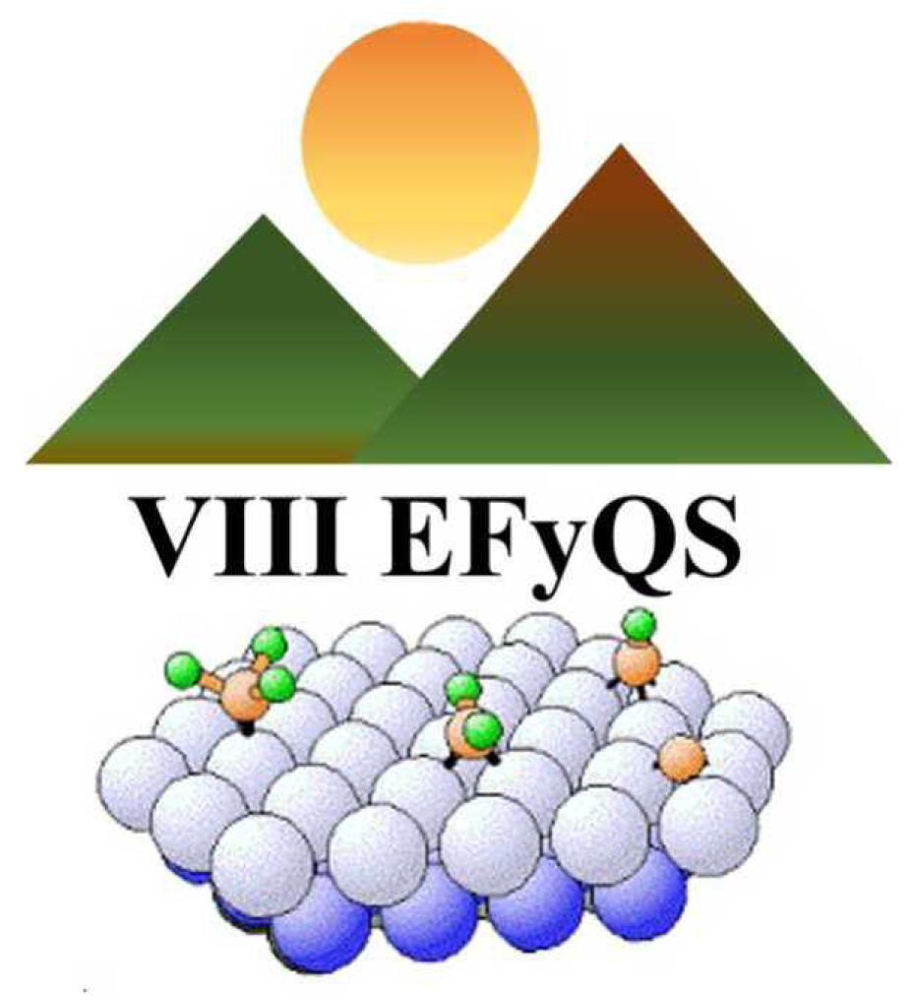
Abstract book ↗VIII Encuentro de Física y Química de Superficies (VIII EFyQS)
Uso de hidrogeles poliméricos para el secuestro de glifosato de soluciones acuosas: estudio de la teoría molecular de la adsorción de films de polialilamina
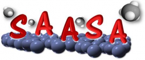
3º Simposio sobre Adsorción, Adsorbentes y sus Aplicaciones (SAASA)
Adsorción de glifosato en brushes poliméricos con respuesta al pH
★ Mención de Honor